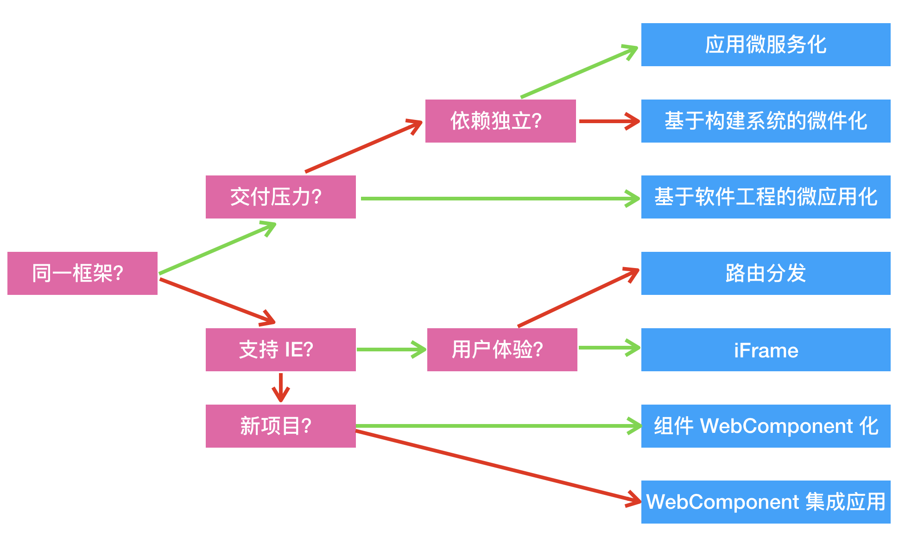
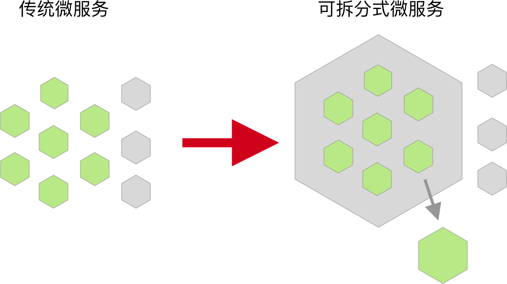
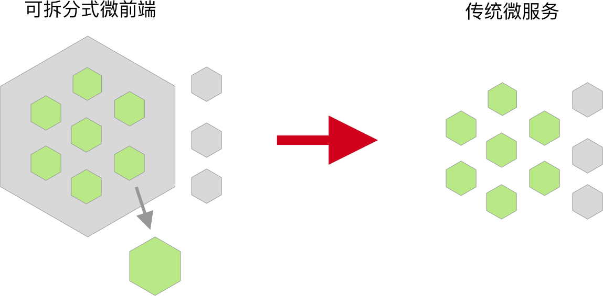

class: center, middle # 微前端 @phodal --- # WHY ？ ## 遗留系统迁移 ## 聚合前端应用 ## 热闹驱动开发 --- # WHAT > 微前端是一种类似于微服务的架构，它将微服务的理念应用于浏览器端。即将单页面前端应用由单一的单体应用，转变为多个小型前端应用聚合为一的应用。各个应用还可以独立开发、独立部署。 <img src="images/mfe-architecture.jpg" alt="Clean Frontend" style="height: auto;width: 90%"> --- # 特性 ## 团队自治 ## 单一职责 ## 技术栈无关 --- # HOW -> 没有银弹 --- # 技术拆分方式 ### 路由分发式 ### 前端微服务化 ### 微应用 ### 微件化 ### 前端容器化 --- # 路由分发式 <img src="images/route-mfe.jpg" alt="Clean Frontend" style="height: auto;width: 100%"> --- # 前端微服务化 <img src="images/frontend-ms.jpg" alt="Clean Frontend" style="height: auto;width: 100%"> --- # 微应用 <img src="images/mapp.jpg" alt="Clean Frontend" style="height: auto;width: 100%"> --- # 微件化 <img src="images/ms-widget.jpg" alt="Clean Frontend" style="height: auto;width: 100%"> --- # 前端容器化 <img src="images/mfe-wc.jpg" alt="Clean Frontend" style="height: auto;width: 100%"> --- # 业务划分方式 ## 按照业务拆分 ## 按照权限拆分 ## 按照变更的频率拆分 ## 按照组织结构拆分 （康威定律） ## 跟随后端微服务划分（DDD) --- # 设计理念 ## 中心化：应用注册表 ## 标识化应用 ## 应用生命周期管理 ## 高内聚，低耦合 --- # 应用管理 <img src="images/mfeapp-loader.jpg" alt="Clean Frontend" style="height: auto;width: 100%"> --- # 设计应用生命周期 - load，决定加载哪个应用，并绑定生命周期 - bootstrap，获取静态资源 - mount，安装应用，如创建 DOM 节点 - unload，删除应用的生命周期 - unmount，卸载应用，如删除 DOM 节点、取消事件绑定 --- # 对比 <img src="images/angular-split-code-compare.jpg" alt="Clean Frontend" style="height: auto;width: 100%"> --- # 选型指南  --- # 没有银弹 --- # 微应用架构  --- # 应用微化架构  --- # 单体架构推荐：Clean Architecture > MVP + 组件化 + Clean Architecture <img src="images/clean-frontend-components.jpg" alt="Clean Frontend" style="height: auto;width: 100%"> --- # Domain 层 > Angular + Angular Schematics 代码生成 ``` ├── entity │ └── blogpost.entity.ts // 请求模式，用于 Type Checking ├── model │ └── blogpost.model.ts // 核心业务模型 ├── repository │ └── blogpost.repository.ts // 用于读取和存储数据，对应于后端 Controller └── usecases ├── update-blospost-by-id.usecase.ts.ts // 用例，构建在核心实体之上，并实现应用程序的整个业务逻辑。 └── get-blogpost-by-id-usecase.usecase.ts // ``` --- # Thank you --- # 相关资源 <img src="images/9787121365348.jpg" alt="前端架构" style="height: 40%;width: 40%"> ---